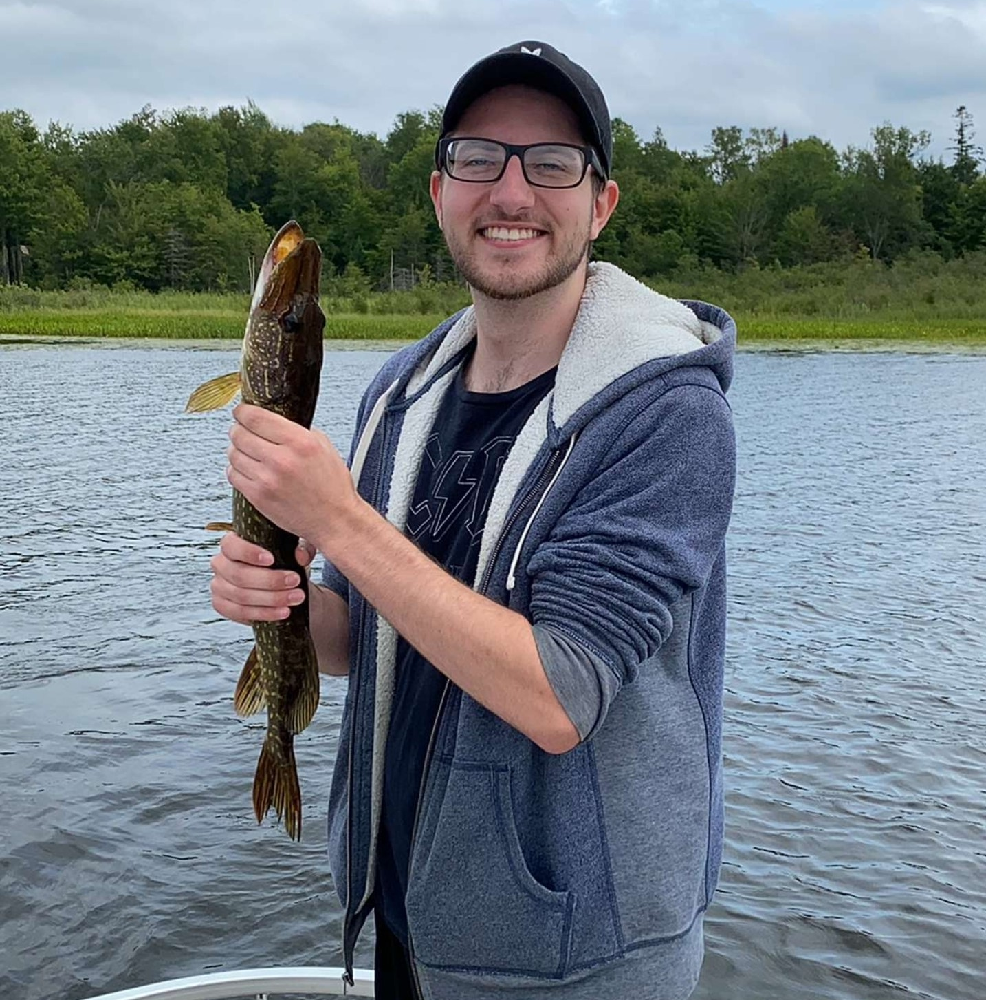
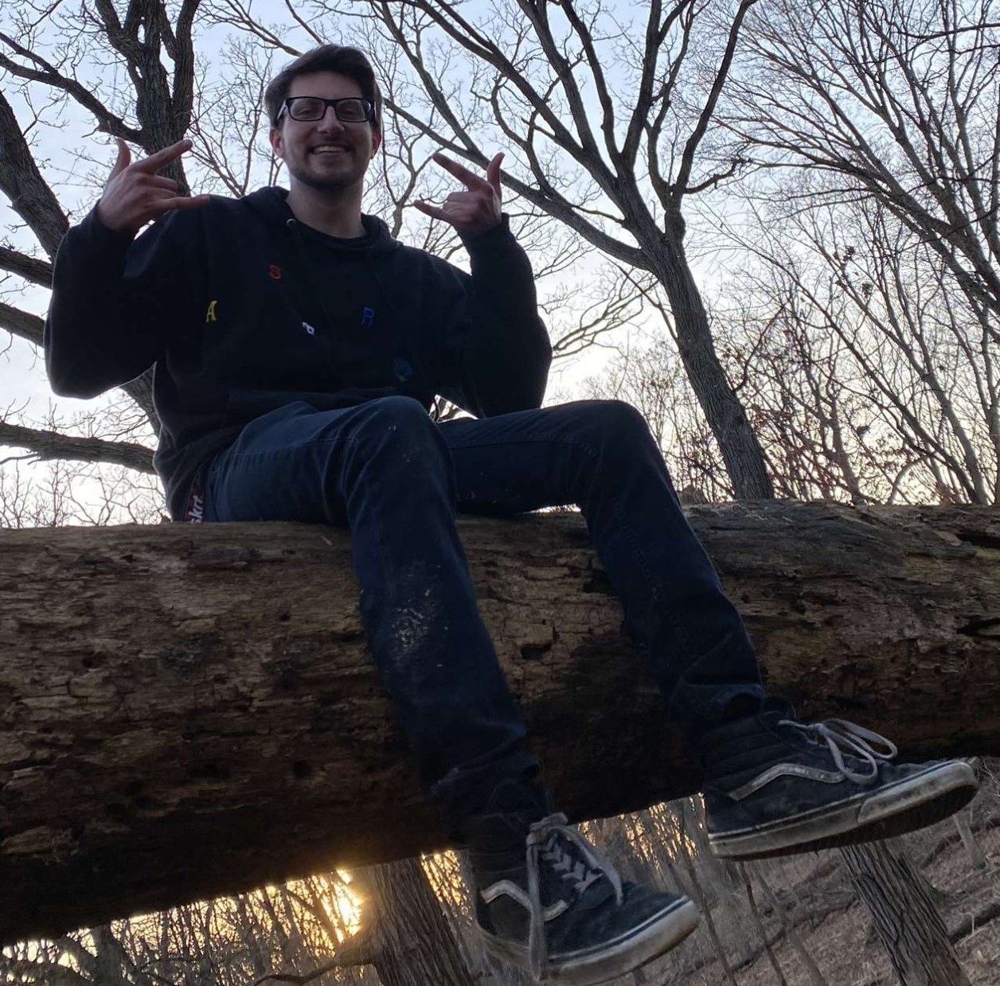

Tony Rispoli
anthonyrrispoli@lewisu.edu
 
Hello class! My name is Tony Rispoli. I was born and raised in Frankfort, IL. My family consists of my mom and dad, my younger brother Danny, and my older brother Nick. Most recently,
the newest member into our home is my 3 year old cat named Link, whom I adoped not even a month ago.
In my free time, I get entertainment out of almost everything. I enjoy watching movies,
playing video games, listening to music, going fishing, and going on hikes.
Here at Lewis University, I am pursuing a Bachelor's degree in Computer Science. Ever since I was in middle school,
I was fascinated by computers and I was determined to work with them. I decided I wanted to study computer science when I was a freshman in high school, not too long after building my first computer.
Currently I have the most programming experience with python, but I have also dabbled in Java, C++, and SQL.
By far, my favorite hobby must be playing video games. I grew up watching my older brother play Crash Bandicoot and Super Monkey Ball and that sparked my interest in games. While I have certainly considered video game design and development as my major, I ultimately determined that video games are best left as a pastime. I must have played through hundreds of games of all varying themes and genres. I could not possibly choose a favorite game, but my top three would have to be Legend of Zelda: Breath of the Wild, Sekiro: Shadows Die Twice, and finally Stardew Valley. All three of those games are wildly different from each other, but I believe they accurately portray good, critically acclaimed games that interest me.
I have been out of the country once. I went on a Carribean cruise when I was around 10 years old, and most notably we picked up Cuban refugees stranded in a rowboat!